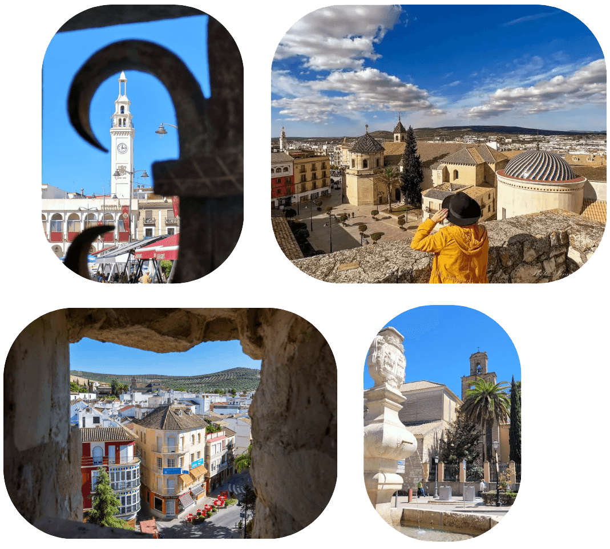
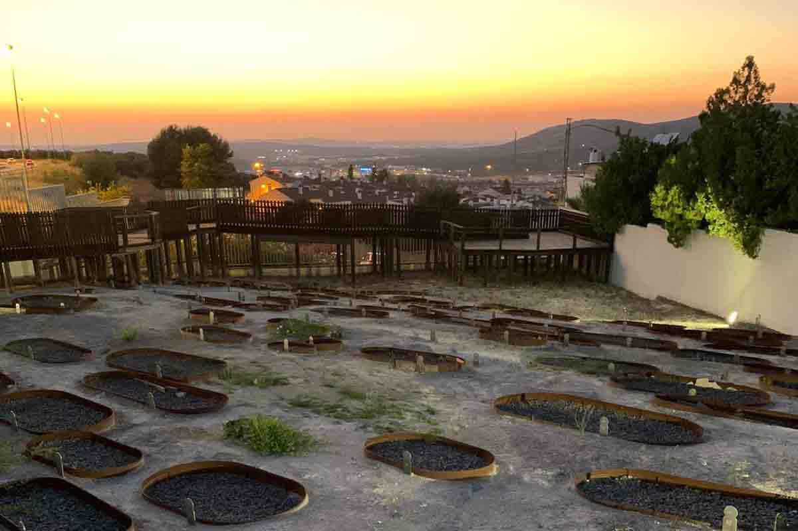

Viajes top destinos del mundo
Ver más

Lucena, conocida como la Perla de Sefarad, se sitúa en el sur de la provincia de Córdoba y destaca por su historia marcada por la convivencia pacífica de la cultura musulmana, cristiana y judía. En la Edad Media fue un importante centro hebreo y un referente artesanal y comercial.
Entre sus monumentos sobresale el Castillo del Moral, antigua prisión de Boabdil y actual Museo Arqueológico, y la Parroquia de San Mateo, con un sagrario barroco considerado una joya artística. También es especialmente relevante la Necrópolis Judía, una de las más grandes y mejor conservadas de España.

Pasear por su casco histórico es descubrir calles blancas, plazas animadas y una profunda herencia sefardí. Lucena forma parte de la Ruta del Barroco Cordobés, con templos y palacios de gran valor, y ofrece una rica gastronomía basada en el aceite de oliva, el vino Montilla-Moriles y dulces tradicionales. En conjunto, Lucena es una ciudad llena de historia, cultura y encanto, ideal para disfrutar con calma.
¡Hola! Soy Maddie, lucentina desde hace 32 primaveras (o veranos, que aquí no tenemos otra cosa). Después de haber vivido fuera varios años, puedo decir sin riesgo a equivocarme que, como en casa, en ningún sitio. Si quieres pasear por calles bonitas, charlar con gente agradable y comer rico, no dudes en darte una vuelta por mi pueblo.
¿Te interesan otros destinos? Echa un ojo a estos: Gijón, Sevilla, Mallorca